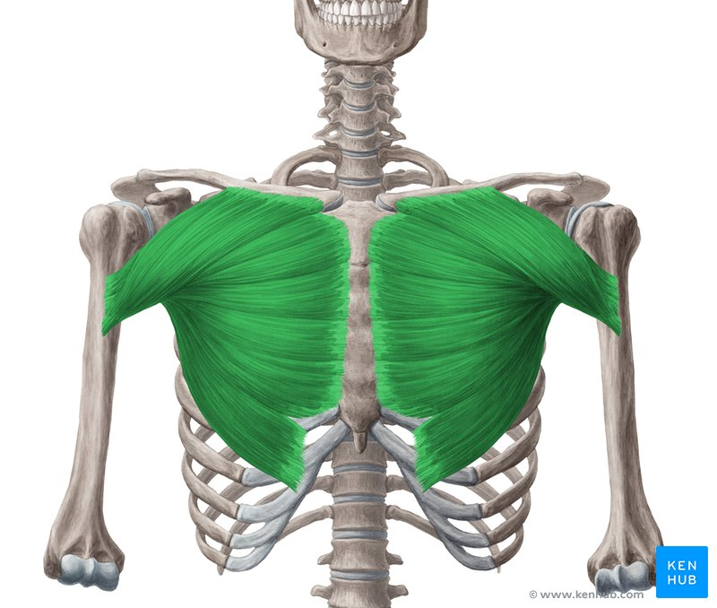

A musculação comprovadamente é uma prática que eleva a auto-estima, além de promover uma vida mais saudável, torneando o corpo e diminuindo significamente as chances de acometimento de doenças, além de, por fim, proporcionar um envelhecimento mais saudável e com qualidade de vida.
Mas apesar dos benefícios, é importante primeiro que se inicie a prática sempre com o aquecimento do corpo.
Essa prática visa tornar a execução dos exercícios mais segura, já que evita significamente as chances de lesões.

Na edição de hoje, veremos os benefícios de um dos exercícios mais populares, que é o supino. Principalmente para o público masculino, a correta execução deste exercícios propicia o aumento do músculo do peito, ou em caráter mais técnico, os músculo "peitoral Maior"!
Por fim, com a execuçao correta e atenção aos detalhes antes e durante a execução do exercício, a atividade física pode ser bastante prazerosa e benéfica para a saúde.
Então, não perca tempo! Comece hoje a cuidar de si, afinal, nosso corpo é nosso templo!